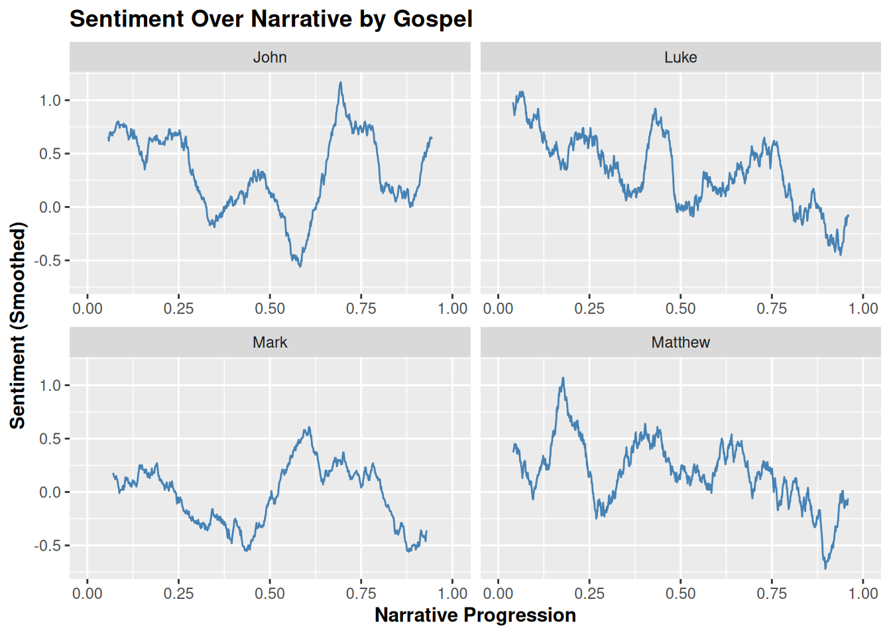
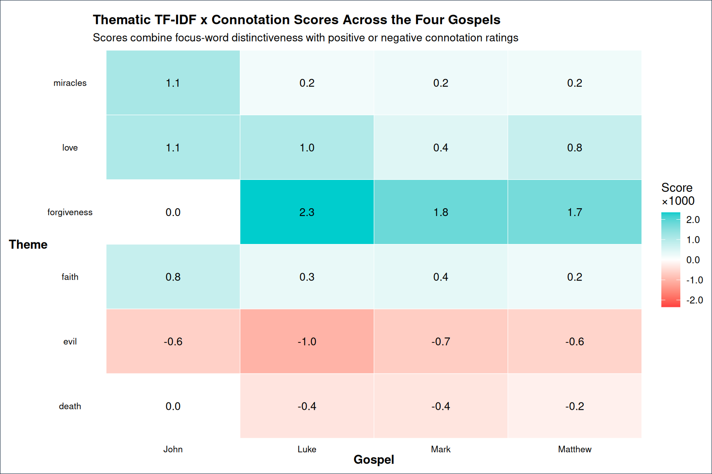
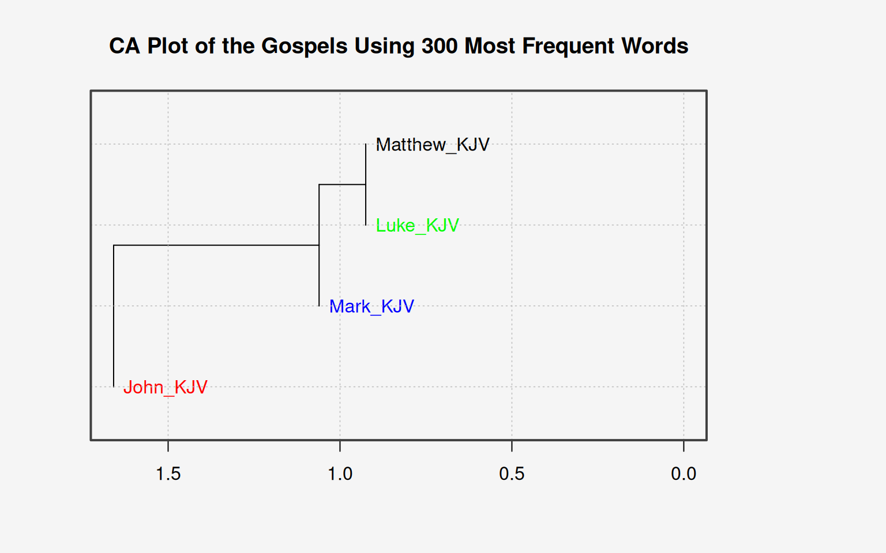

# A tibble: 6 × 4
gutenberg_id text title gospel
<dbl> <chr> <chr> <chr>
1 8040 "Book 40 Matthew" The … Matth…
2 8040 "" The … Matth…
3 8040 "40:001:001 The book of the generation of Jesus Chr… The … Matth…
4 8040 " the son of Abraham." The … Matth…
5 8040 "" The … Matth…
6 8040 "40:001:002 Abraham begat Isaac; and Isaac begat Ja… The … Matth…Text-Analysis Project
Github Project Repo
Introduction
This project was focused on using textual analysis to analyze a large text. For this project myself and Conner Robertson performed a textual analysis of the four gospels found in the New Testament of the Bible.
Background
Religious texts have shaped history not only through what they say, but also through how they are written. The four Gospels in the Bible are often read together because they each tell the story of Jesus from four different perspectives. While they overlap in many places, they also differ in structure, emphasis, and wording. These differences make the Gospels a useful case for text analysis, where we can compare not just what each Gospel says, but how each one says it. In this blog post, we will use computational tools to explore whether the Gospels’ language patterns reflect their historical and literary relationships. To be more specific, our primary goal is to identify which words and themes are most distinctive from one Gospel to the next, and understand the linguistic differences tied to the unique writing styles of each author.
For some brief context, historians generally agree that Mark was the first gospel to be written, around 70 A.D. Matthew and Luke were written between 80-85 A.D, and are generally believed to have used Mark as a source. These three are known as the synoptic gospels, a term derived from the idea of being “seen together. There are many similarities between these three writings, as they share many of the same stories, structures and, as we see, even wording patterns. Our cluster analysis attempts to quantitatively demonstrate this well-understood belief.
Apart from these three, there is John. His gospel is believed to have been written last, around 90 A.D. There are many differences between John and the synoptic gospels, for instance, there are several stories told in John that do not appear in the other three, and parts of the chronology are different.
Data Explanation
The data used in this project contains the King James version of the four Gospels: Matthew, Mark, Luke, and John, from Gutenberg metadata. Each observation represents a portion of Gospel text, organized by Gospel and verse-level information. The raw version of our initial dataset includes the Gutenberg-assigned ID for each gospel, the free-form text, the title, and the Gospel name.
Rolling Sentiment Analysis of each Gospel
First, we can look at an overall sentiment analysis of each of the four gospels. A sentiment analysis takes a look at the vocabulary used throughout a text and determines how positive or negative the text as a whole is. The sentiment of each word is placed on a scale from -5 to 5, where a negative number denotes more negative sentiment, while a positive number denotes positive sentiment. Before assigning a value to each word in the text, we first removed simple words that don’t have a sentiment, words such as: and, thee, thou, and ye to name a few. We determined that a rolling sentiment analysis would be most appropriate for this task, so each data point on the plot takes into account the mean sentiment for the last 100 words. This provides a much smoother way to visualize how the sentiment changes as the narrative progresses. We also normalized each graph so that each of the plots are the same length.

We can see that there are stark difference between the narratives. Luke and Matthew have somewhat similar narrative progressions due to the fact that they were written around the same time, and likely used the same sources. Mark has the most muted account, where we see that the sentiment is not as extreme as the others. This makes sense because Mark is a much more blunt account of Christs life and chooses to focus on His deeds and teachings without too much filler.
We can observe that Mathew, Luke, John all have declining narratives, and then a sharp increase in sentiment a the end. This is due to the portrayal of Christs death and resurrection, the former obviously being negative and the latter being positive. However, this increase is noticeably absent from Marks account. As previously mentioned Mark is the shortest of all the accounts, and comes to a fairly abrupt end after Christs resurrection. Therefore, we don’t see the same jump in sentiment that we observe in the other accounts. Overall, this sentiment analysis allows us to perceive narrative progression throughout the text, and gives us insight into how each author structured their respective narrative.
Exploring Distinctive Thematic Language between the four Gospels
First, we wanted to compare the Gospels through the specific types of language they emphasize. To do so, we split core words and phrases throughout the bible into 6 themes for later sentiment analysis: forgiveness, love, faith, miracles, evil, and death. Focusing on a smaller subset of words forces the analysis to center more directly on the theological and emotional language that shapes each Gospel. However, using sentiment analysis with religious phrases and wording can become quite buggy. Therefore, we had to manually create a ‘lexicon’ that not only categorized the custom set of words into these themes, but also gave a connotation score from -2 to 2: negative values represent darker or conflict-oriented language and positive values represent redemptive or hopeful language.
Since TF-IDF only shows which words are most distinctive in each Gospel, we combined it with our connotation scores to make the measure more interpretive. In other words, a weighted connotation score was created by multiplying each word’s TF-IDF value by its manually assigned connotation score. This means that a word only has a strong impact if it is both distinctive to a Gospel and strongly positive or negative in the lexicon. A positive word with a high TF-IDF score increases the theme’s overall score, while a negative word with a high TF-IDF score decreases it. Words with low TF-IDF values contribute less, even if they have a strong connotation, because they are not especially distinctive to that Gospel.
Below is a sample table showing how a few focus words contribute to the comparison between the four Gospels.
| Gospel | Word | Theme | Connotation | TF-IDF | Weighted contribution |
|---|---|---|---|---|---|
| John | miracles | miracles | 2 | 0.0067 | 0.0134 |
| John | believeth | faith | 2 | 0.0063 | 0.0126 |
| John | sin | evil | -2 | 0.0059 | -0.0119 |
| Luke | devils | evil | -2 | 0.0038 | -0.0076 |
| Mark | devils | evil | -2 | 0.0036 | -0.0073 |
| John | loved | love | 2 | 0.0034 | 0.0068 |
| Luke | sinner | evil | -2 | 0.0032 | -0.0065 |
| Mark | unclean | evil | -2 | 0.0030 | -0.0061 |
| Luke | faith | faith | 2 | 0.0027 | 0.0054 |
| Matthew | devils | evil | -2 | 0.0025 | -0.0051 |
Now we visualized these scores using a heatmap, with the x-axis comparing Matthew, Mark, Luke, and John, and the y-axis listing the six themes. Each tile represents one Gospel-theme combination, with the color and number showing whether that theme is more positively or negatively weighted in that Gospel. Strong positive values indicate that a theme is being shaped by words that are both distinctive to that Gospel and positively coded. Strong negative values indicate that a theme is being shaped by words that are both distinctive to that Gospel and negatively coded. These values are the normalized theme scores multiplied by 1000, which was done only to make the very small TF-IDF-based values easier to read on the plot.

Luke, Mark, and Matthew all demonstrate strong similarities in the forgiveness, miracles, and faith themes. Forgiveness appears to be heavily significant across these three Gospels, with Luke having the highest weighted connotation score at 2.3, followed by Mark at 1.8 and Matthew at 1.7. In contrast, the textual data in John results in a value of 0. This suggests that, based on the forgiveness words included in the lexicon, the Gospel of John did not contain any matches for this theme. Or, for this comparison, the theme of forgiveness is less evident than the other Gospels. Still, of course, this does not inherently mean that the concept of forgiveness is absent from John; rather, it means that this specific method of analysis did not identify words from that theme in the text. At the same time, John also shows stronger results in the themes of miracles and faith. Its weighted connotation scores for these themes are higher than the other Gospels, indicating that John may place greater emphasis on stories of miracles and faith than the other Gospels. Otherwise, the themes of love, evil, and death remain quite similar between Gospels.
Using ‘stylo’ R Package to Measure Literary Style
To further analyze stylometric (the computational analysis of literary style) patterns in the four Gospels, we used the stylo R package. With this package, we wanted to better identify the distinctive writing styles of Matthew, Mark, Luke, and John, as well as understand the unique linguistic patterns among them. This is done through ‘stylos’ processing procedures, which measure features such as word frequency and vocabulary. In machine-learning terms, this is an unsupervised analysis, as the algorithm is not trained to predict any known variable but instead groups the Gospels based on their stylistic similarities and differences. For this analysis, we used the King James Version texts from Project Gutenberg and compared the four texts specifically using the 300 most frequent words.
Therefore, ‘stylo’ essentially compares how often words are repeated across the texts and then calculates which Gospels are most similar or most different from one another. We should also clarify that, because our analysis uses an English translation, the results should be interpreted as patterns specific to the KJV version of the Gospels and may not generalize to other versions.

This visualization is a cluster analysis plot, which works like a family tree of textual similarity. Texts that connect on shorter branches are more similar to one another, while texts that connect farther away are more distant in text patterning. To be more specific, the x-axis shows relative Euclidean distances, which represent stylistic similarity (lower values indicate greater similarity; higher values indicate greater dissimilarity). Matthew and Luke both sit at roughly 0.8, showing that they are the closest pair in this clustering. John’s Gospel seems to be at a much larger distance, demonstrating that it is the most linguistically distinct book in the analysis. additionally, as we have seen in historical context, the timeline of these words are evident in the cluster analysis, where John sits far from the other three.
Overall, our analyses show that computational text analysis can reveal meaningful differences and similarities between the four Gospels that align with their historical and literary relationships. These findings show that while the four Gospels share many central religious themes, they differ in how strongly they emphasize certain ideas and in the structure of their language and wording. These differences highlight the distinct perspectives each Gospel brings to the larger narrative of Jesus’ life and teachings.
References/Sources
https://www.britannica.com/topic/biblical-literature/The-Synoptic-Gospels?utm_source
https://www.bartehrman.com/messianic-secret/